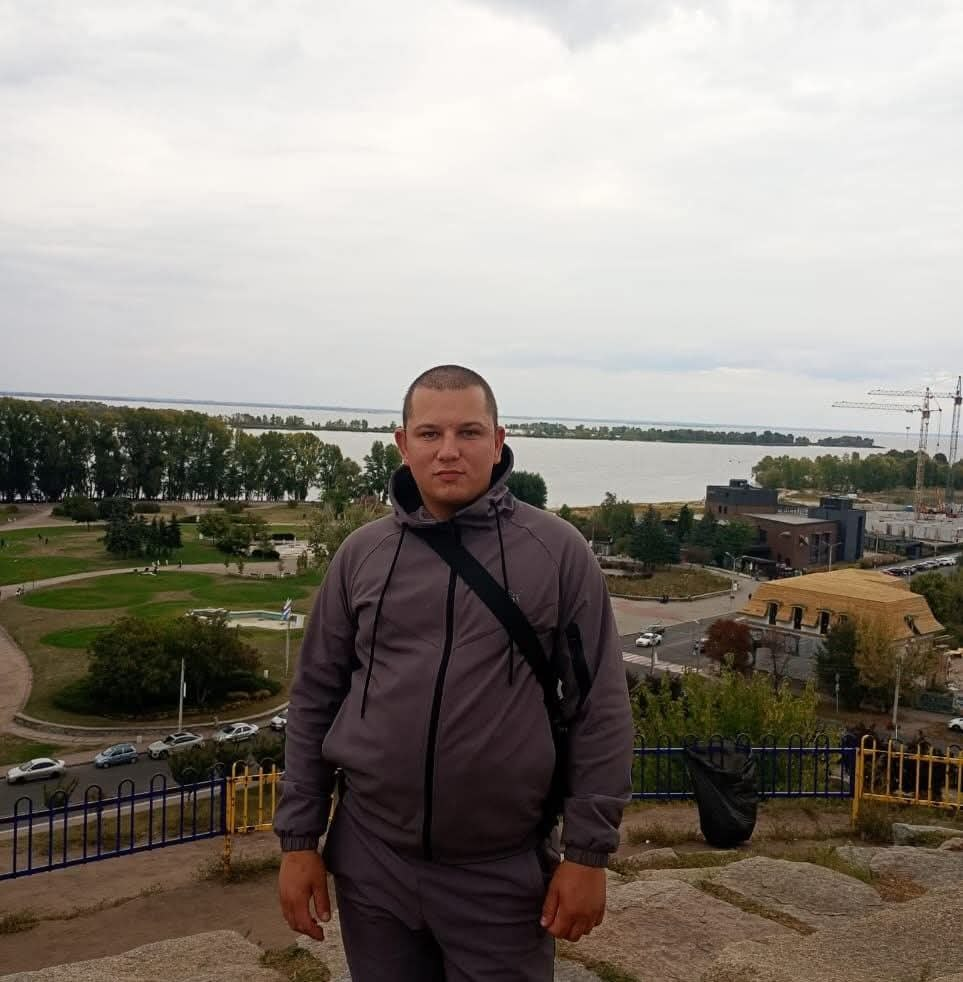

Сучасні цифрові інструменти та методичні розробки в освітньому процесі

Вітаю на моєму офіційному вебресурсі! Цей сайт функціонує як персональний цифровий простір, створений для демонстрації практичних навичок, впровадження інформаційно-комунікаційних технологій у навчальний процес та представлення інноваційних педагогічних розробок.
Даний вебресурс створено як випускне цифрове портфоліо вчителя інформатики. Головна мета сайту — систематизація методичних напрацювань, демонстрація практичних навичок у галузі веб-розробки (HTML/CSS) та представлення сучасних цифрових дидактичних матеріалів. Сайт слугує платформою для обміну досвідом та підтвердження професійної кваліфікації вчителя-практика в умовах нової української школи.
Повні розробки та плани-конспекти інтегрованих уроків інформатики з використанням хмарних платформ розробки, присвячені вивченню веб-технологій та структури сайтів.
Методичні інструкції, практичні рекомендації щодо проектування, розгортання та адміністрування електронних навчальних курсів у сучасній СУН Moodle.
Комплекси адаптованих навчальних матеріалів, побудовані на принципах Універсального дизайну в навчанні (УДН) та дидактичні картки підтримки для учнів 1-го класу.